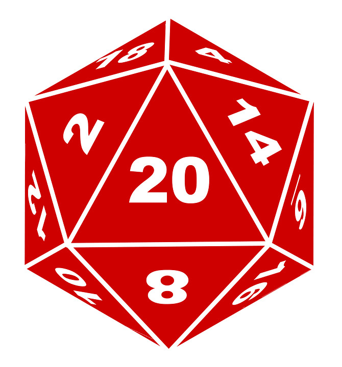

Hi! My name is Adam. Since birth I have loved all the fantastic things from Power Rangers, Knights of the Zodiac, then being a bit older Hobbit, Lord of the Rings, Harry Potter and the worlds of Marvel and DC. Despite growing up I am still fascinated by these worlds and I am looking for new details from these worlds that I did not know before.
Playing computer games also accompanied me almost from the beginning, starting with Commodore, then Amiga, then Pegasus and PSX until finally learning the magic of PC master race. Don't misunderstand me, consoles were a big factor in my life, but being a player who likes RTS games, I had no choice but to finally build my own PC, which was a memorable experience. From that time I am up to date with the news about new cpu's, gpu's and all that.
Being a little bit older, while playing games I get very involved in the game world, its history and mechanics. That's why I started playing Dungeons and Dragons as Dungeon Master. Creating a campaign that will have a great impact on players is really rewarding.
My dream job would be to play in the NBA, but as they say, whites can't jump. So it would "satisfy" me if I could create, or at least help to create, games with a rich world history.
Experience
Currently, I do not have experience from gamedev companies, but I took part in a few game jams:
-
04.2017 - Ludum Dare 38, game - „LymphocyteCounterattack”, organizer: Technical University of Lodz
-
12.2017 - Ludum Dare 40, game - „Thief”, organizer: Technical University of Lodz
-
04.2019 - Ludum Dare 44, game - „Dead Sirius”, organizer: Technical University of Lodz
Also I took part in ZTGK 2019, in which with team Wicked Studio we got placed in top 3 in development category with game Rh-. The second game that I helped the team PsychoCat Studio was The Nightmare, but sadly it didn't placed in top 3.
Education
In 2014 I started studying at the Technical University of Lodz. On October 22nd I will defend my engineering thesis.
In the summer of 2019 I participated in an internship at Likaon/WJTeam. During the internship we dealt with different stages of film creation. At the beginning we created scripts, storyboards and mood boards. Then we got to know Adobe After Effects, ZBrush and Adobe Premier Pro programs. At the end, in groups, we did the project we were assigned.
Programing:
Software:
Blender
3DS Max
Maya
Substance Painter
Unreal
Unity
Adobe (Premier Pro, Photoshop, Illustrator, After Effects)
Office
RH-
Hack 'n slash game with turn-based elements. Game created as part of the studies, was entered into the ZTGK 2019 competition, where it was placed in the top3 in the development category.
Description of the game
You play the role of Annabelle, a hybrid of human and vampire, whose parents were murdered and she was thrown into prison. All this is done by vampire side of her family, which did not accept the relationship of her vampire father with an ordinary woman. Annabelle faces a very hard choice whether she will rely only on her human side or lose herself in her vampire side.
My contribution:
- Models of which the dungeon is built
- Inventing a game concept
- Creating a universe in which the game is played
- Testing and gameplay balancing
You can watch gameplay here: Click, and if you want to download game click here: Click
Galery
The Nightmare
FPS multiplayer game with tactical elements. Playing as one of the syblings you have to protect candles from evil creatures. Game entered into ZTGK 2019 competition, where has been awarded a distinction.
Description of the game
The siblings wake up in the nightmare that takes place in the astral version of their home. To get out of it, they have to work together in a fight against the monsters that emerge from the darkness. Children know that monsters will attack at midnight. They have to find the right toys and prepare their home to fight them. Any nightmare can be controlled, so they use their imagination to turn their toys into weapons. Children will only get out of the nightmare if they keep the light on in their rooms.
My contribution:
- Models like house, wardrobe, chairs, table and textures for them
- Co-Inventing a game concept
- Level design
- Testing and gameplay balancing
You can watch trailer here: Click, and if you want to download game click here: Click
Galery

Discord D&D Bot
I started playing D&D over discord, so I decided to make a bot. For now he can just roll dice, but I plan on adding few extra things, so playing over discord will be as smooth as possible.
Description
As for now he can only roll dice for you, but he's very good at it. You can roll any dice and how many times you want. You can roll with advantage (bot will show results and pick the highest one) and with disadvantage (same as advantage, but with lowest score). Bot can also take into account modifiers, like -3, +4.
Example: roll 3 d20 -3 adv
Bot will roll d20 three times, but will substract 3 from every roll and he will pick the highest result.
Planning to add:
- Poll maker, based on discord reaction system
- Music player, from youtube/spotify
- Displaying text from sites like roll20 (info about spells, items)
- Character sheets, so players can have theirs character saved through bot
Link for adding him to your server: Click, but remember that he's online only when I'm using him. He's not on dedicated server (yet I think, maybe in a future, when he will be worthy).